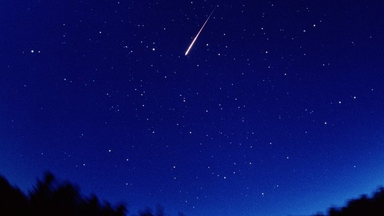

")
آسمان پر نظر آنے والے دمدار تارے (Meteor) کے متعلق قرآن کے مصنف نے انتہائی بڑی سائنسی غلطی کی ہے، جس کا خلاصہ یہ ہے:
قرآن کے مصنف (محمد صاحب) کے مطابق:
- آسمان میں جو ہمیں ٹمٹماتے ہوئے ستارے نظر آ رہے ہیں، وہ اصل میں جلتے ہوئے "چراغ" ہیں۔
- ان ستاروں کے ذریعے اللہ نے 7 آسمانوں میں سے سب سے پہلے آسمان (جسے قرآن نے دنیا والا آسمان (السما الارض) کہا ہے) کو زینت دی ہے۔
- اور جو ہمیں آسمان میں کبھی کبھار چنگاری کی طرح روشنی دیتا دمدار تارہ نظر آتا ہے، تو اس کا ماخذ (Source) بھی یہی آسمان پر ٹمٹماتے ہوئے ستارے ہیں جو کہ اصل میں جلتے ہوئے چراغ ہیں۔
- اور اللہ نے ان ستاروں (جلتے ہوئے چراغوں) کو جنات کو مارنے کا آلہ بنایا ہے۔ اور وہ اس طرح کہ جب کوئی جن دنیا والے پہلے آسمان پر جا کر آسمانی خبریں سننے کی کوشش کرتا ہے، تو ان ستاروں (جلتے ہوئے چراغوں) سے یہ روشنی دیتی چنگاری (شھابِ ثاقب) نکلتی ہے جو ایسے جن کو نشانہ بناتی ہے۔
جبکہ سائنس ان قرآنی دعوؤں کو جھٹلا رہی ہے۔ سائنس کے مطابق:
- یہ روشنی دیتی چنگاری کسی ٹمٹماتے اور نظر آتے ستارے (پہلے سے جلتے ہوئے چراغ) سے نہیں نکلتی، بلکہ اس کا ماخذ Asteroids ہیں۔
- اور یہ Asteroid ہمیں آسمان میں ٹمٹاتے ہوئے نظر نہیں آتے، بلکہ یہ بالکل تاریک ہیں اور انسانی آنکھ سے انہیں دیکھنا ناممکن ہے۔
- اور یہ Asteroid چراغوں کی طرح جل بھی نہیں رہے ہیں، بلکہ بالکل "ٹھنڈے اور سرد" ہیں۔
- Asteroid بڑی بڑی چٹانیں ہیں جو کہ سورج کے گرد سیاروں کی طرح گردش میں ہیں۔ یہ زیادہ تر Mars اور Jupiter کے درمیان موجود ہیں، مگر کچھ زمین کے قریب بھی ہیں۔ جب دو Asteroid آپس میں ٹکراتے ہیں تو یہ موتیوں کے سائز کے چھوٹے چھوٹے پتھروں میں ٹوٹ کر بکھر جاتے ہی جنہیں meteoroids کہتے ہیں۔ جب یہ چھوٹے چھوٹے meteoroids خلا سے ہماری زمین کی فضا میں کشش ثقل کی وجہ سے داخل ہوتے ہیں، تو یہ vaporise ہو کر چنگاری کی طرح کی روشنی دیتے لگتے ہیں اور انہیں اس وقت meteor (دمدار تارہ) کہا جاتا ہے۔ (لنک)۔
قرآن اور سائنس کا اگلا ٹکراؤ آسمان کے "فاصلے" پر ہو رہا ہے:
- قرآن کے مطابق جتنے ستارے ہمیں نظر آ رہے ہیں، وہ زمین والے پہلے آسمان کے نیچے ہیں۔ چنانچہ اگر پہلے آسمان کا واقعی میں کوئی وجود ہے بھی، تو بھی اس کا زمین سے فاصلہ اربوں کھربوں نوری سالوں سے بھی زیادہ ہے۔
- جبکہ سائنس کے مطابق یہ روشنی دیتی چنگاری (شھاب ثاقب) تو زمین سے صرف 62 میل کے فاصلے پر ہوتی ہے۔ یہ وہ وقت ہوتا ہے جب meteoroids خلا سے ہماری زمین کی فضا میں کشش ثقل کی وجہ سے داخل ہوتے ہیں، اور فضا سے رگڑ کھا کر گرم ہو کر جلنے لگتے ہیں، اور ہمیں چنگاری کی طرح روشنی دیتے نظر آتے ہیں۔ چنانچہ اس لحاظ سے زمین والا پہلا آسمان کا فاصلہ ہماری زمین سے 62 میل سے بھی کم نکلتا ہے۔
- چنانچہ اگر زمین والے پہلے آسمان کو 62 میل کے فاصلے پر مانا جائے تو قرآن کی تکذیب ہو جاتی ہے کیونکہ پھر ستاروں کو پہلے آسمان سے بلند ماننا پڑے گا کیونکہ یہ ستارے ہماری زمین سے کھربوں نوری سالوں کے فاصلے پر موجود ہیں۔
قرآن اور سائنس کا اگلا ٹکراؤ یہ ہے کہ قرآن کے مصنف کو Asteroids کے ساتھ ساتھ تاریک ستاروں کے وجود کا بھی علم نہیں:
- خلا میں سورج جیسےجلتے ستاروں کے علاوہ ہماری زمین کی طرح کھربوں کی تعداد میں ٹھوس ستارے بھی موجود ہیں، مگر وہ ہمیں چمکتے اور ٹمٹماتے ہوئے نظر نہیں آتے، بلکہ وہ ہماری انسانی آنکھوں کے لیے بالکل تاریک ہیں۔سورج کی طرح کے ان جلتے ستاروں کے علاوہ ہمیں صرف قریب کے کچھ سیارے Mars اور Jupiter بھی ٹمٹماتے ہوئے نظر آتے ہیں کیونکہ یہ سورج کی روشنی کو منعکس کر رہے ہوتے ہیں۔ ان کے علاوہ خلا میں جتنے بھی کھربوں کی تعداد میں ستارے سورج کی طرح نہیں جل رہے ہیں، وہ ہمیں آنکھ سے نظر نہیں آتے اور نہ ہی وہ آسمان کو کوئی زینت دے رہے ہیں کیونکہ ان سے زمین کا فاصلہ اتنا زیادہ ہے کہ ان کی منعکس کردہ روشنی بھی ہم تک نہیں پہنچ پاتی۔
- مگر قرآن کے مصنف (محمد صاحب) کوAsteroids کے ساتھ ساتھ ان کھربوں کی تعداد میں موجود تاریک ستاروں کے متعلق سرے سے کچھ علم ہی نہیں ہے بلکہ اس کے نزدیک آسمان پر موجود تمام ستارے ٹمٹما رہے ہیں کیونکہ اللہ نے ان تمام ستاروں کو بنایا ہی اسی لیے ہے تاکہ وہ چمک کر دنیا والے پہلے آسمان کو زینت دے سکیں۔
قرآن و حدیث کے مطابق چمکتے اور دنیا کو زینت دیتے ستارے ہی جنات کو مارنے کا آلہ بھی ہیں
پہلی آیت:
(سورۃ 67، آیت 5) وَلَقَدْ زَيَّنَّا السَّمَاءَ الدُّنْيَا بِمَصَابِيحَ وَجَعَلْنَاهَا رُجُومًا لِّلشَّيَاطِينِ وَأَعْتَدْنَا لَهُمْ عَذَابَ السَّعِيرِ
ترجمہ:
اور ہم نے (7 آسمانوں میں سے) دنیا والے پہلے آسمان کو زینت دی چراغوں(یعنی ستاروں) سے، اور ان کو شیطان کے مارنے کا ذریعہ بنایا۔
دوسری آیت:
(سورۃ 37، آیت 6 تا 10) إِنَّا زَيَّنَّا السَّمَاءَ الدُّنْيَا بِزِينَةٍ الْكَوَاكِبِ۔ وَحِفْظًا مِّن كُلِّ شَيْطَانٍ مَّارِدٍ۔ لَّا يَسَّمَّعُونَ إِلَى الْمَلَإِ الْأَعْلَىٰ وَيُقْذَفُونَ مِن كُلِّ جَانِبٍ۔ دُحُورًا ۖ وَلَهُمْ عَذَابٌ وَاصِبٌ۔ إِلَّا مَنْ خَطِفَ الْخَطْفَةَ فَأَتْبَعَهُ شِهَابٌ ثَاقِبٌ۔
ترجمہ:
بے شک ہم نے (سات آسمانوں میں سے) دنیا والے پہلے آسمان کو زینت دی ستاروں (عربی لفظ: کواکب) سے۔ اور اسے (پہلے آسمان کو) ہر سرکش شیطان سے محفوظ بنایا۔ جب وہ شیاطین عالم بالا کی باتیں سننے کی کوشش کرتے ہیں تو ہر طرف سے انہیں مارا جاتا ہے۔ اُن کو بھگانے کے لئے اور اُن کے لئے دائمی عذاب ہے۔ مگر جو (شیطان) ایک بار جھپٹ کر (فرشتوں کی کوئی بات) اُچک لے تو ایک روشنی دیتی چنگاری/شعلہ/شرارہ (عربی: شھاب ثاقب) اس کے پیچھے لگ جاتا ہے۔
نوٹ: ان دونوں آیات میں "زَيَّنَّا السَّمَاءَ الدُّنْيَا"(دنیا والے پہلے آسمان کو زینت دینا) مشترک ہے، جس کا مطلب ہے کہ یہی کواکب (ستارے) ہی ہیں جنہیں قرآن کا مصنف آیت 67:5 میں شیاطین کو مارنے کا آلہ ہونے کا دعویٰ کر رہا ہے۔
تیسری آیت:
(سورۃ 72، آیات 8 تا 9) وَأَنَّا لَمَسْنَا السَّمَاءَ فَوَجَدْنَاهَا مُلِئَتْ حَرَسًا شَدِيدًا وَشُهُبًا۔ وَأَنَّا كُنَّا نَقْعُدُ مِنْهَا مَقَاعِدَ لِلسَّمْعِ فَمَن يَسْتَمِعِ الْآنَ يَجِدْ لَهُ شِهَابًا رَّصَدًا
ترجمہ:
(جنات کہتے ہیں کہ) جب ہم آسمان پر پہنچے تو ہم نے اسے سخت پہروں اور شعلوں سے بھرا ہو ا پایا۔ اور یہ کہ پہلے ہم سن گن لینے کے لیے آسمان میں بیٹھنے کی جگہ پا لیتے تھے، مگر اب جو چوری چھپے سننے کی کوشش کرتا ہے وہ اپنے پاتا ہے ایک انتظار کرتا ہوا شعلہ/چنگاری"
نوٹ:
شِهَابًا رَّصَدًا میں "شھاب" کا مطلب شعلہ/انگارہ/چنگاری ہے، جبکہ "رصدا" کا مطلب ہے انتظار کرتا ہوا
چوتھی آیت:
(سورۃ 15، آیات 16 تا 18) وَلَقَدْ جَعَلْنَا فِي السَّمَاءِ بُرُوجًا وَزَيَّنَّاهَا لِلنَّاظِرِينَ۔ وَحَفِظْنَاهَا مِن كُلِّ شَيْطَانٍ رَّجِيمٍ۔ إِلاَّ مَنِ اسْتَرَقَ السَّمْعَ فَأَتْبَعَهُ شِهَابٌ مُّبِينٌ
ترجمہ:
اور بیشک ہم نے آسمان میں برج بنائے اور ان سے دیکھنے والوں کے لیے (آسمان کو) زینت دی، اور پھر ہم نے اس آسمان کو ہر شیطان سے محفوظ کر دیا۔ سوائے اس کے کہ کوئی (شیطان) چُوری چُھپے سُننے کوشش کرے، تب پیچھا کرتا ہے اُس کا ایک روشن شعلہ۔
"شھاب مبین" میں شھاب کا مطلب ہے شعلہ، اور مبین کا مطلب ہے روشن۔
حدیث:
صحیح بخاری، مخلوقات کی ابتداء کا بیان ۔ حدیث 458 (لنک) :
وعن قتادة قال خلق الله تعالى هذه النجوم لثلاث جعلها زينة للسماء ورجوما للشياطين وعلامات يهتدى بها فمن تأول فيها بغير ذلك أخطأ وأضاع نصيبه وتكلف مالا يعلم .
ترجمہ:
قتادہ نے آیت کریمہ ((67:5) اور ہم نے سات آسمانوں میں سے دنیا والے پہلے آسمان کو چراغوں سے مزین کیا) کے تحت فرمایا کہ ان ستاروں (عربی لفظ: نجوم) کی تخلیق کے تین مقاصد ہیں، پہلا ہے انہیں آسمان کی زینت بنانا ، دوسرا ہے ان کے ذریعے شیاطین کو مارنا اور تیسرا ہے (راستے ڈھونڈنے کے لیے انسان کی) رہنمائی کا ذریعہ
پہلا چیلنج: مسلمان ثابت کریں کہ Asteroids/Meteoroids کششِ ثقل کے تحت حرکت نہیں کرتے
ایک اور بات نوٹ کیجئے کہ ان قرآنی آیات اور احادیث کے مطابق ایسا نہیں ہے کہ شیطان پر شعلوں کی بارش شروع ہو جاتی ہے، بلکہ "صرف ایک شعلہ/چنگاری" سے شیطان کو نشانہ بنایا جاتا ہے۔ یہ اسی وقت ممکن ہے کہ جب باقاعدہ "نشانہ" لے کر شیطان پر شعلہ پھینکا جائے۔
(سورۃ 15، آیات 16 تا 18) وَلَقَدْ جَعَلْنَا فِي السَّمَاءِ بُرُوجًا وَزَيَّنَّاهَا لِلنَّاظِرِينَ۔ وَحَفِظْنَاهَا مِن كُلِّ شَيْطَانٍ رَّجِيمٍ۔ إِلاَّ مَنِ اسْتَرَقَ السَّمْعَ فَأَتْبَعَهُ شِهَابٌ مُّبِينٌ
ترجمہ:
اور بیشک ہم نے آسمان میں برج بنائے اور ان سے دیکھنے والوں کے لیے (آسمان کو) زینت دی، اور پھر ہم نے اس آسمان کو ہر شیطان سے محفوظ کر دیا۔ سوائے اس کے کہ کوئی (شیطان) چُوری چُھپے سُننے کوشش کرے، تب پیچھا کرتا ہے اُس کا ایک روشن شعلہ۔
مگر سائنس کے مطابق یہ Asteroids اور Meteoroids تو کڑوڑوں اربوں سالوں سے اپنے محوروں پر مستقل محو سفر ہوتے ہیں اور پھر کشش ثقل کے باعث یونہی سفر کرتے ہوئے زمین کے کرہ ہوائی میں داخل ہو جاتے ہیں۔ جبکہ جنات کو مارنے کے لیے لازمی ہے کہ فرشتے صاف طور پر 'نشانہ' لے کر انہیں جنات پر میزائل کی طرح ماریں۔ جبکہ اگر کوئی Asteroid وغیرہ زمین کے مدار کی طرف آ رہا ہو تو سائنسدان بہت پہلے سے ہی کشش ثقل کے قانون کے تحت اس کی رفتار دیکھتے ہوئے اس کے زمین پر پہنچنے کے وقت کے متعلق بتا دیتے ہیں اور اسکے راستے کا تعین بھی بہت حد تک تعین کر لیتے ہیں کہ وہ زمین پر کس وقت کونسے مقام پر گر سکتا ہے۔
چنانچہ مسلمانوں کو چیلنج ہے کہ وہ ثابت کریں کہ یہ Asteroids اور meteoroids کششِ ثقل کے قانون کے تحت اپنی خاص رفتار اور راستے پر سفر نہیں کرتے، بلکہ انہیں خاص نشانہ لے کر مارا جاتا ہے جس سے انکی رفتار اور راستہ کشش ثقل کے قانون کے تحت نہیں رہتے۔
مثلاً ، سائنسدانوں نے پہلے سے ہی یہ پیشنگوئی کر دی تھی کہ 6 مئی، 2022 کو سب سے زیادہ (یعنی پچاس سے ساٹھ meteors فی گھنٹہ کی حساب سے زمین کے مدار میں داخل ہوتے ہوئے دمدار تارے کی طرح دکھائی دیں گے۔
Up to 50 shooting stars an hour are expected to light up the night sky during the Eta Aquarid meteor shower. The dazzling display takes place between April 19 and May 28 but will peak this year on Friday (May 6).
The meteor shower is known for its swiftly moving streaks with long trains, according to the American Meteor Society, whizzing through the atmosphere at 41 miles a second. Experts at Royal Observatory Greenwich say the best time to catch a glimpse of the celestial display – which will be visible all over the world – will be between midnight and dawn on Friday. As with all meteor showers, in order to see the Eta Aquarids it is necessary to find a dark site with an unobstructed view of the sky.
یہ خبر 4 مئی کو شائع ہوئی، اور انہوں نے کئی ہفتے بعد 19 مئی اور 28 مئی کے درمیان meteor کی ہونے والی بارش کی پیشنگوئی کی۔ چنانچہ اسکا مطلب ہے:
- سائنسدان یہ بتانے کے قابل ہیں کہ جنات/شیاطین مستقبل میں کب آسمانی خبریں سننے کے لیے پہلے آسمان تک پہنچیں گے۔
- اور حتیٰ کہ وہ یہ تک بتانے کے قابل ہیں کہ "کتنی تعداد" میں یہ جنات فی گھنٹہ کی رفتار سے آسمانی خبریں سنیں گے (یعنی خبر کے مطابق 50 تا 60 کی تعداد میں meteors فی گھنٹہ کے حساب سے نظر آئیں گے)۔
بلاشبہ، یہاں سائنسدان بھی اللہ کے ساتھ ساتھ مستقبل کے متعلق غیب کا علم رکھنے لگے اور توحید اور اللہ کے واحد عالم الغیب ہونے کا نطریہ ختم ہو چکا ہے۔ اس میں عقل والوں کے لیے نشانی پوری ہے، مگر افسوس کہ اہل مذہب اپنی عقائد کو کبھی بھی عقل کے روشنی میں نہیں پرکھتے۔
دوسرا چیلنج: قرآنی دعویٰ کہ پہلا آسمان زمین سے صرف 62 میل کے فاصلے پر ہے
قرآن کہہ رہا ہے کہ جب یہ شیاطین/جنات پہلے آسمان پر پہنچ کر باتیں سنتے ہیں تو ان پر چنگاریوں (meteors) کی بارش ہو جاتی ہے۔ مگر ہمیں پتا ہے کہ meteors تو زمین سے صرف 62 میل دور اس وقت چنگاری کی طرح روشنی دیتے ہیں جب وہ خلا سے زمین کی فضا میں داخل ہو رہے ہوتے ہیں۔ اور خلا زمین سے صرف 62 میل کے فاصلے پر واقع ہے۔ اس لحاظ سے قرآن کے مطابق پہلا آسمان زمین سے صرف 62 میل کے فاصلے پر واقع ہے۔
(سورۃ 72، آیات 8 تا 9) وَأَنَّا لَمَسْنَا السَّمَاءَ فَوَجَدْنَاهَا مُلِئَتْ حَرَسًا شَدِيدًا وَشُهُبًا۔ وَأَنَّا كُنَّا نَقْعُدُ مِنْهَا مَقَاعِدَ لِلسَّمْعِ فَمَن يَسْتَمِعِ الْآنَ يَجِدْ لَهُ شِهَابًا رَّصَدًا
ترجمہ:
(جنات کہتے ہیں کہ) جب ہم آسمان پر پہنچے تو ہم نے اسے سخت پہروں اور شعلوں سے بھرا ہو ا پایا۔ اور یہ کہ پہلے ہم سن گن لینے کے لیے آسمان میں بیٹھنے کی جگہ پا لیتے تھے، مگر اب جو چوری چھپے سننے کی کوشش کرتا ہے وہ اپنے لیے گھات میں ایک چمکتا ہوا انگارہ (meteor) لگا ہوا پاتا ہے"
تو سوچئے، کیا واقعی دنیا کے تمام سائنسدان اندھے ہیں کہ انہیں صرف 62 میل کے فاصلے پر نہ تو قرآن کا بیان کردہ "ٹھوس آسمان" نظر آتا ہے، نہ ہی یہاں پر موجود فرشتے آپس میں بیٹھے باتیں کرتے نظر آتے ہیں، اور نہ ہی اس پر موجود آدم نبی اور انکی قوم براجمان نظر آتی ہے۔(دیکھئےصحیح مسلم کی روایت جس کے مطابق پہلے آسمان پر آدم براجمان ہیں اور انکے داہنی طرف جنتی لوگ ہیں جنہیں دیکھ کر آدم ہنستے ہیں، جبکہ باہنی طرف دوزخی ہیں، جنہیں دیکھ کر آدم مسلسل رو رہے ہیں)؟
لیکن اگر یہ سائنسدان اندھے نہیں، تو اس کا واحد مطلب یہ ہے کہ یہ قرآن کا مستند سائنسی بلنڈر (Blunder) ہے اور قرآن کا مصنف صرف اپنے اُس جاہلیت کے زمانے کے غلط سلط قصے کہانیاں اس قرآن میں بیان کر رہا ہے۔
مزید یہ کہ دوسری طرف قرآن کا یہ دعویٰ بھی ہے کہ جتنے بھی ستارے ہیں، وہ سب کے سب زمین والے پہلے آسمان کے نیچے موجود ہیں، اور انہیں اللہ نے بنایا ہی اس لیے ہے کہ زمین والے آسمان کو ان سے "زینت" دے سکے۔
(سورۃ 37، آیت 6 تا 10) إِنَّا زَيَّنَّا السَّمَاءَ الدُّنْيَا بِزِينَةٍ الْكَوَاكِبِ۔
ترجمہ:
بے شک ہم نے (سات آسمانوں میں سے) دنیا والے پہلے آسمان کو ستاروں (عربی لفظ: کواکب) سے زینت دی۔
مگر پھر جدید سائنس نے آ کر قرآن کے ان تضادات کے ڈھول کا پول کھولا، اور بتلایا کہ یہ ستارے تو زمین سے اربوں نوری سالوں کے فاصلے پر موجود ہیں، اور GN-z11 نامی ستارہ تو زمین سے 13.9 ارب نوری سال پر واقع ہے۔
اب مسلمان عذر خواہوں کو دعوت ہے کہ وہ اس قرآنی تضاد کو دور فرمائیں۔
حدیث (بخاری): پہلا آسمان بادلوں پر ہے
اور اس حدیث میں محمد صاحب نئی سائنس بیان کرتے ہوئے فرما رہے ہیں کہ پہلا آسمان بادلوں پر ہے؛
عائشہ صدیقہ رضی اللہ عنہا نے بیان کیا کہ انہوں نے نبی کریم صلی اللہ علیہ وسلم سے سنا ۔ آپ نے فرمایا تھا کہ فرشتے عنان میں اترتے ہیں ۔ اور عنان سے مراد بادل ہیں ۔ یہاں فرشتے ان کاموں کا ذکر کرتے ہیں جن کا فیصلہ آسمان میں ہو چکا ہوتا ہے ۔ اور یہیں سے شیاطین کچھ چوری چھپے باتیں اڑا لیتے ہیں ۔ پھر کاہنوں کو اس کی خبر کر دیتے ہیں اور یہ کاہن سو جھوٹ اپنی طرف سے ملا کر اسے بیان کرتے ہیں ۔
یہ واقعی اُسوقت کے زمانے کے لوگوں کا عقیدہ ہوتا تھا کہ بادل (پہلے) آسمان پر ہوتے ہیں۔
اسی طرح محمد صاحب کا عقیدہ تھا کہ برف کے اولے بھی پہلے آسمان میں موجود پہاڑوں سے آتے ہیں:
(قرآن 24:43) أَلَمْ تَرَ أَنَّ اللَّهَ يُزْجِي سَحَابًا ثُمَّ يُؤَلِّفُ بَيْنَهُ ثُمَّ يَجْعَلُهُ رُكَامًا فَتَرَى الْوَدْقَ يَخْرُجُ مِنْ خِلَالِهِ وَيُنَزِّلُ مِنَ السَّمَاءِ مِن جِبَالٍ فِيهَا مِن بَرَدٍ
ترجمہ:
کیا تو نے نہیں دیکھا الله ہی بادل کو چلاتا ہے پھر اسے ملاتا ہے پھر اسے تہہ بر تہہ کرتا ہے پھر تو بارش کو دیکھتا ہے کہ اس کے بیچ میں سے نکلتی ہے اور آسمان سے جو ان میں اولوں کے پہاڑ ہیں ان میں سے اولے برساتا ہے پھر انہیں جس پر چاہتا ہے گراتا ہے اور جس سے چاہتا ہے روک لیتا ہے
آپ قرآن کا لفط بہ لفظ ترجمہ یہاں (لنک) اور (یہاں) دیکھ سکتے ہیں۔ اور اردو اور انگریزی کے پرانے ترجمے یہاں (لنک) دیکھ سکتے ہیں جو کہ یہی بات بیان کر رہے ہیں کہ آسمان میں پہاڑ ہیں جہاں سے اولے نازل ہوتے ہیں۔
اور بارش کے آسمان سے نازل ہونے کا ذکر قرآن کا مصنف اس آیت میں کر رہا ہے:
(قرآن 2:22) الَّذِي جَعَلَ لَكُمُ الأَرْضَ فِرَاشاً وَّالسَّمَاءَ بِنَاءً وَّأَنزَلَ مِنَ السَّمَاءِ مَاءً
ترجمہ:
جس نے تمہارے لیے زمین کو بچھونا اور آسمان کو چھت بنایا اور پھر آسمان سے پانی اتارا
شبہ: کیا ثبوت ہے کہ قران میں بیان کردہ "شھاب ثاقب" وہی ٹوٹے دمدار تارے (Meteors) ہیں :
یہ سوال بھی پوچھا جاتا ہے کہ:
اس بات کا کیا ثبوت ھے کہ شہاب ثاقب ھی وہ گولے ھیں یا چمکتے تارے ھیں جو شیاطین کو مارے جاتے ھیں ۔۔ ممکن ھیں جو شیاطین اور جنات کو مارے جاتے ھیں وہ انسانی آنکھ کو نظر ھی نہ آتے ھوں۔۔۔۔اور Meteors کا اسمیں کوئ کردار نہ ھو ۔۔۔
اسکا ثبوت ان احادیث میں ہے کہ جہاں محمد صاحب نے اس ٹوٹے دمدار تارے کو دیکھ کر ہی جنات کی آسمانوں سے خبر لانے والی کہانی سنائی تھی۔
صحیح مسلم، کتاب السلام (لنک):
أَنَّ عَبْدَ اللهِ بْنَ عَبَّاسٍ ، قَالَ : أَخْبَرَنِي رَجُلٌ مِنْ أَصْحَابِ النَّبِيِّ صَلَّى اللَّهُ عَلَيْهِ وَسَلَّمَ مِنَ الأَنْصَارِ ، أَنَّهُمْ بَيْنَمَا هُمْ جُلُوسٌ لَيْلَةً مَعَ رَسُولِ اللهِ صَلَّى اللَّهُ عَلَيْهِ وَسَلَّمَ رُمِيَ بِنَجْمٍ فَاسْتَنَارَ ، فَقَالَ لَهُمْ رَسُولُ اللهِ صَلَّى اللَّهُ عَلَيْهِ وَسَلَّمَ : مَاذَا كُنْتُمْ تَقُولُونَ فِي الْجَاهِلِيَّةِ ، إِذَا رُمِيَ بِمِثْلِ هَذَا ؟ قَالُوا : اللَّهُ وَرَسُولُهُ أَعْلَمُ ، كُنَّا نَقُولُ وُلِدَ اللَّيْلَةَ رَجُلٌ عَظِيمٌ ، وَمَاتَ رَجُلٌ عَظِيمٌ ، فَقَالَ رَسُولُ اللهِ صَلَّى اللَّهُ عَلَيْهِ وَسَلَّمَ : فَإِنَّهَا لاَ يُرْمَى بِهَا لِمَوْتِ أَحَدٍ وَلاَ لِحَيَاتِهِ ، وَلَكِنْ رَبُّنَا تَبَارَكَ وَتَعَالَى اسْمُهُ ، إِذَا قَضَى أَمْرًا سَبَّحَ حَمَلَةُ الْعَرْشِ ، ثُمَّ سَبَّحَ أَهْلُ السَّمَاءِ الَّذِينَ يَلُونَهُمْ ، حَتَّى يَبْلُغَ التَّسْبِيحُ أَهْلَ هَذِهِ السَّمَاءِ الدُّنْيَا ، ثُمَّ قَالَ : الَّذِينَ يَلُونَ حَمَلَةَ الْعَرْشِ لِحَمَلَةِ الْعَرْشِ : مَاذَا قَالَ رَبُّكُمْ ؟ فَيُخْبِرُونَهُمْ مَاذَا قَالَ : قَالَ فَيَسْتَخْبِرُ بَعْضُ أَهْلِ السَّمَاوَاتِ بَعْضًا ، حَتَّى يَبْلُغَ الْخَبَرُ هَذِهِ السَّمَاءَ الدُّنْيَا ، فَتَخْطَفُ الْجِنُّ السَّمْعَ فَيَقْذِفُونَ إِلَى أَوْلِيَائِهِمْ ، وَيُرْمَوْنَ بِهِ ، فَمَا جَاؤُوا بِهِ عَلَى وَجْهِهِ فَهُوَ حَقٌّ ، وَلَكِنَّهُمْ يَقْرِفُونَ فِيهِ وَيَزِيدُونَ.
ترجمہ:
حضرت عبد اللہ بن عباس رضی اللہ عنہ سے روایت ہے کہ رسول اللہ کے اصحاب میں سے ایک انصاری نے بیان کیا کہ ایک رات کو وہ رسول اللہ کے پاس بیٹھے ہوئے تھے کہ ایک ستارہ (عربی لفظ: نجم) ٹوٹا اور اس کی روشنی پھیلی ، رسول اللہ نے فرمایا: زمانہ جاہلیت میں تم اس حادثہ کے متعلق کیا کہتے تھے ؟ صحابہ نے عرض کیا : اللہ اور اس کا رسول زیادہ جانتے ہیں ، ہم یہ کہتے تھے کہ آج رات کو بہت بڑا آدمی پیدا ہوا ہے ، اور کوئی بہت بڑا آدمی فوت ہوگیا ہے ، رسول اللہ نے فرمایا: ستارہ اس وجہ سے نہیں ٹوٹتا کہ کوئی مرتا ہے یا پیدا ہوتا ہے ، لیکن ہمارا رب تبارک و تعالیٰ جب کسی امر کا فیصلہ کرتا ہے تو حاملین عرش فرشتے سبحان اللہ کہتے ہیں ، پھر جوان کے قریب آسمان کے فرشتے ہیں سبحان اللہ کہتے ہیں یہاں تک کہ ان کی تسبیح دنیا والے آسمان کے رہنے والوں تک پہنچتی ہے ، پھر حاملین عرش کے قریب والے حاملین عرش سے کہتے ہیں : تمہارے رب نے کیا فرمایا ہے ؟ پھر وہ خبر دیتے ہیں کہ اللہ تعالیٰ نے کیا فرمایا ہے ، پھر بعض اہل سماء بھی دوسروں کو بتاتے ہیں (کہ اللہ تعالیٰ نے کیا فرمایا ہے ) یہاں تک کہ ساتویں آسمان سے ہوتے ہوئے یہ خبر دنیا والے پہلے آسمان تک پہنچتی ہے ، پھر جن اس سنی ہوئی بات کو لے اڑتے ہیں اور اسے (کاہنوں کے کانوں میں) پھونک دیتے ہیں ، تو اگر وہ اسی طرح خبر دیں تو وہ سچ ہوتی ہے ، لیکن وہ اس میں اپنی مرضی سے کچھ اور ملا دیتے ہیں۔
اور عربی الفاظ "کوکب" اور "نجم" دونوں ستاروں کے لیے استعمال ہوتے ہیں۔ اس کا ذکر اس لیے ضروری ہے کیونکہ کچھ اسلام عذرخواہ کوکب اور نجم کے استعمال کے ذریعے کنفیوژن پیدا کرنے کی کوشش کرتے ہیں۔
اسی طرح بخاری کی روایت میں انہیں "نظر" آنے والے ستاروں (نجوم) کو ہی جنات کو مارنے کا ذریعہ بتلایا جا رہا ہے۔ (صحیح بخاری، مخلوقات کی ابتداء کا بیان ۔ حدیث 458 (لنک))۔
حدیث (بخاری): جنات "سیڑھی کی طرح ایک دوسرے کے کندھوں پر سوار" ہو کر آسمان تک پہنچے ہوئے ہیں؟
اور صحیح حدیث تو اور زیادہ غضب ڈھا رہی ہے جہاں جناب محمد کہہ رہے ہیں شیاطین سیڑھی کی طرح ایک دوسرے کے کندھوں پر اوپر نیچے سوار ہو کر آسمان تک پہنچ جاتے ہیں، اور جب وحی کو سن لیتے ہیں تو اسے اپنے سے موجود نیچے والے شیطان تک منتقل کرتے جاتے ہیں۔
صحیح بخاری، کتاب التفسیر (لنک، اردو)، مشکوۃ (لنک):
رسول نے فرمایا کہ جب اللہ تعالیٰ آسمان پر کسی بات کا فیصلہ کرتا ہے تو فرشتے اللہ تعالیٰ کے فیصلہ کو سن کر جھکتے ہوئے عاجزی کرتے ہوئے اپنے بازو پھڑپھڑاتے ہیں۔ اللہ کا فرمان انہیں اس طرح سنائی دیتا ہے جیسے صاف چکنے پتھر پر زنجیر چلانے سے آواز پیدا ہوتی ہے۔ پھر جب ان کے دلوں سے گھبراہٹ دور ہو جاتی ہے تو وہ آپس میں پوچھتے ہیں کہ تمہارے رب نے کیا فرمایا؟ وہ کہتے ہیں کہ حق بات کا حکم فرمایا اور وہ بہت اونچا، سب سے بڑا ہے پھر ان کی یہی گفتگو چوری چھپے سننے والے جنات سن کر بھاگتے ہیں، اور یہ جنات آسمان تک ایک دوسرے (کے کندھوں) پر یوں اوپر تلے سوار ہوتے ہیں، سفیان نے اس موقع پر ہتھیلی کو موڑ کر انگلیاں الگ الگ کر کے شیاطین کے جمع ہونے کی کیفیت بتائی کہ اس طرح جنات ایک کے اوپر ایک کر کے ایک دوسرے پر سوار ہوتے ہیں (جیسے سیڑھی)، اور اوپر والا جن فرشتوں کی بات کو چوری چھپے سن کر اپنے سے نیچے والے جن کو بتا دیتا ہے اور وہ اپنے سے نیچے والے جن کو بتا دیتا ہے یہاں تک کہ آخری جن جو سب سے نیچے ہوتا ہے ، وہ اس بات کو کاہن تک پہنچا دیتا ہے ۔کبھی ایسا ہوتا ہے کہ اس سے پہلے کہ وہ یہ کلمہ اپنے سے نیچے والے جن کو بتائے، تو آگ کا گولا اوپر والے جن کو آ دبوچتا ہے۔ اور کبھی ایسا ہوتا ہے کہ جب اوپر والا جن نیچے والے جن کو بتا چکا ہوتا ہے، تو پھر آگ کا انگارہ اوپر والے جن کو پڑتا ہے۔ اس کے بعد کاہن اس میں سو جھوٹ ملا کر لوگوں سے بیان کرتا ہے ۔
دوسری طرف قرآن دعویٰ کر رہا ہے کہ جتنے ستارے ہمیں نظر آتے ہیں، وہ سب کے سب دنیا والے پہلے آسمان سے نیچے ہیں اور اس کو زینت دے رہے ہیں۔ یہ ستارے اربوں نوری سالوں کے فاصلے پر موجود ہیں۔ یعنی محمد صاحب کے مطابق یہ جنات ایک دوسرے کے کندھوں پرسیڑھی کی طرح سوار ہو کر ان اربوں نوری سالوں سے زیادہ فاصلے پر موجود پہلے آسمان تک پہنچے ہوتے ہیں۔
اب بتلائیے کہ آج کی 21 ویں صدی میں سوچنے سمجھنے والا انسان اس پر اپنا سر نہیں پیٹے گا تو اور کیا کرے گا ؟
اور یہ بھی خوب رہی کہ فرشتوں کا نشانہ بھی بسا اوقات خطا جاتا ہے اور جو شھاب ثاقب وہ میزائل کی طرح شیطان پر مارتے ہیں، وہ میزائل اپنے نشانے سے چوک جاتے ہیں، یا پھر دیر سے نشانہ پر لگتے ہیں کہ جب اوپر والا جن پہلے ہی یہ خبر اپنے سے نیچے والے جن کو دے چکا ہوتا ہے۔
اور مسلمان پکڑے جانے پر عذر خواہی کرتے ہیں کہ قرآن و حدیث سائنس کی کتابیں نہیں۔ تو اگر یہ سائنس کی کتابیں نہیں ہیں تو پھر اللہ اور محمد صاحب پھر یہ الٹی سیدھی سائنس کی باتیں قران اور حدیث میں بیان ہی کیوں کر رہے ہیں؟
محمد صاحب نے شھاب ثاقب کی یہ کہانی اس لیے گھڑی تاکہ کاہنوں کی اہمیت کو ختم کیا جا سکے
محمد صاحب کے نبوت کے دعوے کے باوجود لوگ کاہنوں کے پاس جا کر ان سے غیب کی خبریں پوچھتے تھے۔ خود محمد صاحب نے قرآن میں موسی والے دیومالائی قصے میں ان کاہنوں کے فرعون کو غیب کی خبر دینے کی تصدیق بھی کر دی تھی کہ بنی اسرائیل میں ایک بچہ پیدا ہونے والا ہے جو فرعون کا تختہ الٹ دے گا۔ چنانچہ لوگ مسلمان ہونے کے باوجود کاہنوں کے پاس جا کر ان پر اپنا مال لوٹاتے تھے کہ وہ بدلے میں انہیں غیب کی کوئی خبر بیان کر دیں۔
اگرچہ کہ محمد صاحب نے پہلے قرآن میں فرعون کا قصہ بیان کر دیا تھا، مگر بعد میں محمد صاحب کو یہ بات پسند نہ آئی لوگ کاہنوں پر بھی پیسہ لٹائیں اور وہ چاہتے تھے کہ لوگ کاہنوں کے پاس جانا مکمل طور بند کر دیں۔ مگر یہ اسی وقت تک ممکن تھا جب تک کہ کاہنوں کے پاس غیب کی خبر ہونے کا مکمل انکار نہ کر دیا جائے۔
چنانچہ محمد صاحب نے کاہنوں کی اہمیت ختم کرنے کے لیے نئی کہانی گھڑی جس کے مطابق پہلے تو جنات آسمان میں جا کر اللہ کی بھیجی گئی آسمانی خبروں کو سن لیا کرتے تھے، اور پھر اسے کاہنوں تک پہنچا دیا کرتے تھے، مگر اب محمد صاحب کی بعثت (رسالت) کے بعد یہ سلسلہ مکمل طور پر منقطع ہو گیا ہے اور کاہنوں کے پاس مزید آسمان سے کوئی غیب کی خبر نہیں پہنچ سکتی کیونکہ اب اگر وہ کوئی غیب کی خبر سننے آسمان پر پہنچتے ہیں، تو پھر فرشتے اب ان پر نشانہ لے کر چمکتے ہوئے انگاروں (شھابِ ثاقب) کو میزائل کی طرح مارتے ہیں۔
چنانچہ اس غرض سے محمد صاحب نے یہ آیت نازل کروائی۔
(سورۃ 72، آیات 8 تا 9) وَأَنَّا لَمَسْنَا السَّمَاءَ فَوَجَدْنَاهَا مُلِئَتْ حَرَسًا شَدِيدًا وَشُهُبًا۔ وَأَنَّا كُنَّا نَقْعُدُ مِنْهَا مَقَاعِدَ لِلسَّمْعِ فَمَن يَسْتَمِعِ الْآنَ يَجِدْ لَهُ شِهَابًا رَّصَدًا
ترجمہ:
اور ہم نے آسمان کو چھوا تو ہم نے اسے سخت پہروں اور شعلوں سے بھرا ہو ا پایا۔ اور یہ کہ پہلے ہم (آسمانی خبروں کی) سن گن لینے کے لیے آسمان میں بیٹھنے کی جگہ پا لیتے تھے، مگر اب (یعنی محمد صاحب کی بعثت کے بعد) جو جن چوری چھپے سننے کی کوشش کرتا ہے وہ اپنے لیے گھات میں ایک چمکتا ہوا شعلہ لگا ہوا پاتا ہے"
محمد صاحب نے یہ کہانی گھڑ کر کامیابی کے ساتھ کاہنوں کے پاس غیب کی خبروں کا مکمل انکار کر دیا اور انہیں مکمل طور پر ناکارہ کر دیا۔ مگر جھوٹ کے ساتھ مسئلہ یہ ہوتا ہے کہ ایک جھوٹ کو چھپانے کے لیے بعض اوقات مزید سو جھوٹ گھڑنے پڑ جاتے ہیں۔
یہی مسئلہ محمد صاحب کی گھڑی ہوئی اس کہانی کے ساتھ بھی ہوا، اور سوال اٹھ کھڑا ہو کہ آسمان پر یہ چمکتے ہوئے شعلے تو محمد صاحب کی بعثت سے پہلے سے برستے نظر آ رہے ہوتے ہیں۔ تو اگر محمد صاحب کی بعثت سے پہلے یہ شعلے جنات کو مارنے کا کام نہیں کرتے تھے، تو پھر آسمان میں وہ کیوں جلتے ہوئے نظر آتے تھے؟
محمد صاحب نے خود اس سوال کا جواب نہیں دیا کہ ان کی بعثت سے قبل پھر کیوں ستارے ٹوٹ کر گرتے تھے۔ شاید وہ خود اس سوال کا جواب دینے سے قاصر تھے۔
بعد میں آنے والے مسلمانوں نے اس سوال کا جواب دینے کی جو کوشش کی ہے، وہ بھی لولے لنگڑے بہانے کے علاوہ کچھ اور نظر نہیں آتی۔
مثلاً مولانا محمد شفیع اپنی تفسیر "معارف القرآن" میں اس آیت 72:8 کی تفسیر میں لکھتے ہیں (لنک):
۔۔۔ یہاں یہ شبہ ہوسکتا ہے کہ شہاب ثاقب جس کو عرف میں ستارہ ٹوٹنا یا عربی میں انقضاص الکوکب کہتے ہیں۔ یہ تو دنیا میں قدیم زمانہ سے ہوتا آیا ہے اور اس آیت سے معلوم ہوتا ہے کہ یہ عہد نبوی کی تخصیص ہے۔ جواب یہ ہے کہ شہاب ثاقب کا وجود تو پہلے سے تھا خواہ اس کی حقیقت وہ ہو جو فلاسفہ بیان کرتے ہیں کہ زمین سے کچھ آتشیں مادے فضا میں پہنچتے ہیں وہ کسی وقت بھڑک اٹھتے ہیں یا یہ ہو کہ خود کسی ستارہ اور سیارہ سے یہ آتشیں مادہ نکلتا ہو۔ بہرحال اس کا وجود اگرچہ ابتداء عالم سے ہے مگر اس آتشیں مادہ سے شیاطین کو دفع کرنے کا کام رسول اللہ (صلی اللہ علیہ وآلہ وسلم) کی بعثت سے شروع ہوا۔
مولانا شفیع کے اس عذر کو دیکھ کر سب خود اندازہ لگا سکتے ہیں کہ مسلمانوں کے پاس اس سوال کو کوئی جواب موجود نہیں ہے، سوائے آئیں بائیں شائیں کرنے کے۔
پھر یہ کہانی کاہنوں کے ناکارہ ہو جانے تک ہی محدود نہ رہی، بلکہ محمد صاحب نے اپنی شان بڑھانے کی خاطر اس کہانی میں بعد میں مزید یہ اضافہ بھی کر دیا کہ آسمانی خبریں سننے پر پابندی لگنے کے بعد کچھ شیاطین/جنات نے جب محمد صاحب کو قرآن پڑھتے سنا، تو وہ اسلام لے آئے۔
صحیح بخاری، کتاب الاذان (لنک):
(ایک دن) نبی صلی اللہ علیہ وآلہ وسلم اپنے چند اصحاب کے ساتھ سوق عکاظ کی طرف ارادہ کرکے چلے اور (اس وقت) شیاطین کو آسمان کی خبریں لانے سے روک دیا گیا تھا، اور ان پر شعلے پھینکے جاتے تھے، پس شیاطین اپنی قوم کے پاس لوٹ آئے، قوم نے کہا تمہارا کیا حال ہے؟ اب کی مرتبہ کوئی خبر نہیں لائے، شیاطین نے کہا کہ ہمارے لئے آسمان تک جانا ممنوع کردیا گیا اور اب ہمارے اوپر شعلے پھینکے جاتے ہیں، قوم نے کہا کہ تمہارے آسمان تک جانے کی رکاوٹ کی کوئی خاص ایسی نئی وجہ پیدا ہوئی ہے، جو حال ہی میں ظاہر ہوئی ہے، لہٰذا زمین کے مشرق اور مغرب کی تمام جوانب میں سفر کرو اور دیکھو وہ کیا چیز ہے، جس نے تمہارے اور آسمانی خبر کے درمیان رکاوٹ ڈال دی (چنانچہ وہ لوگ اس تلاش میں نکلے) تو جو لوگ ان میں سے تہامہ کی طرف آئے تھے وہ نبی صلی اللہ علیہ وآلہ وسلم کے پاس آئے اور آپ اس وقت مقام نخلہ میں سوق عکاظ جا رہے تھے ( چنانچہ جب یہ جنات وہاں پہنچے ہیں تو) آپ (اس وقت) اپنے اصحاب کے ہمراہ فجر کی نماز پڑھ رہے تھے، جب ان جنوں نے قرآن کو سنا تو اس کو سنتے رہے اور کہنے لگے کہ اللہ کی قسم یہی ہے جس نے تمہارے اور آسمان کی خبر کے درمیان میں رکاوٹ ڈال دی، پس وہیں سے اپنی قوم کے پاس لوٹ کر گئے، تو کہنے لگے کہ اے ہماری قوم (کے لوگو!) ہم نے ایک عجیب قرآن سنا ہے جو ہدایت کی راہ بتاتا ہے، پس ہم اس پر ایمان لے آئے اور (اب) ہم ہرگز اپنے پروردگار کا کسی کو شریک نہ بنائیں گے
جنات کے اسلام لانے کی کہانی اُس وقت کے لوگوں کے لیے بڑی جاندار اور دلچسپ تھی، اور یقیناً محمد صاحب نے اس کہانی کے ذریعے اپنی نبوت کو بہت استحکام بخشا۔
مسلم بہانہ: قرآن ستاروں سے نکلنے والی گیما شعاعوں کا ذکر کر رہا ہے
ایک نیا بہانہ مارکیٹ میں مسلمانوں کی طرف سے یہ پیش ہو رہا ہے (لنک):
کائنات میں موجود کھربوں ستاروں سے گیما شعاعوں کے بھڑک یعنی Gamma Ray Burst اور کائناتی شعاعوں کے جیٹ یعنی Cosmic Jet ستاروں سے ہی نکلتے ہیں۔ اس طرح جب قرآن کہتا ہے کہ ہم نے ستاروں کو شیاطین کے خلاف ایک میزائل کے طور پہ بنایا ہے تو قرآن کا مطلب (اس سے meteor یعنی ٹوٹتے دمدار تارے نہیں بلکہ) اس سے مراد ستاروں سے نکلنی والی زبردست توانائی والی گیما شعاعیں اور کائناتی جیٹ ہیں جو خلا میں کسی بھی جاندار کو ہلاک کرنے کے لیے کافی ہیں
پہلا: یہ گیما شعاعیں "چمکتے انگارے" کی طرح نہیں نکلتیں اور نہ ہی کبھی دمدار تارے کی طرح نظر آتی ہیں، بلکہ یہ تو نکل کر "ہر طرف" بغیر کسی مخصوص سمت کے پھیل جاتی ہیں۔
دوسرا: جنات آسمانوں کو ٹٹولتے پھرتے ہیں اور کوئی گیما ریز انہیں تباہ نہیں کرتیں۔ یہ چمکتے انگارے صرف اس وقت جنات کے پیچھے لگتے ہیں جب وہ کچھ سننا چاہیں۔
تیسرا: محمد نے حدیث (صحیح مسلم، کتاب السلام) میں بہت واضح طور ان روشنی دیتے دمدار تارے کے واقعہ پیش آنے پر اسے جنات کے آسمان پر فرشتوں کی باتیں سننے سے جوڑا ہے۔
مسلمانوں کے اس عذر پر مزید کوئی تبصرہ کرنا فضول ہے۔ مسلمانوں کو یہ گیما شعاعوں کا بہانہ گھڑنا ہی اس لیے پڑا کیونکہ پچھلے سارے بہانے اتنے بودے تھے کہ جہاں سورج جیسے جلتے ستاروں کو قرآن نے meteors بنا دیا تھا۔ مگر مسئلہ یہ ہے کہ گیما شعاعوں والا بہانہ تو قرانی meteor والے بہانے سے بھی زیادہ لنگڑا لولا ہے۔
مسلم بہانہ: meteoroids بھی ستاروں کا حصہ تھے
ایک مسلم عذر یہ ہے کہ جب اللہ آسمان پر موجود چراغوں (ستاروں) کو جنات کو مارنے کا آلہ بیان کر رہا ہے تو بھی یہ بات درست ہے کیونکہ meteoroids بھی تو ستاروں کا ہی حصہ ہوتے ہیں۔
مگر یہ مسلم بہانہ بھی بالکل غلط ہے کیونکہ یہ meteoroids ہرگز آسمان پر "چمکتے" اور آسمان کو زینت دیتے "چراغوں" (ستاروں) کے حصے نہیں ہیں، بلکہ یہ تو زیادہ سے زیادہ ماضی کے پہلے سے "تباہ شدہ" ایسے ستاروں کا حصہ ہو سکتے ہیں جو کہ مزید نہ تو چراغوں کی طرح آسمان پر چمکتے نظر آ رہے ہیں اور نہ ہی آسمان کو مزید کوئی زینت مہیا کر رہے ہیں۔
جبکہ قرآن کا مصنف زمانہ حال کا صیغہ استعمال کرتے ہوئے دعویٰ کر رہا ہے کہ یہ چمکتے اور آسمان کو زینت دیتے ہوئے ستارے ہیں جو کہ شیاطین کو مارنے کا آلہ ہیں۔
نیا مسلم دعویٰ: 62 میل کے فاصلے پر خلا ہی زمین والا پہلا آسمان ہے
آج جب سائنس نے شھاب ثاقب کا زمین سے فاصلہ 62 میل ثابت کر دیا، تو پھر مسلمانوں نےاپنی 1400 سالہ تاریخ میں پہلی مرتبہ نیا بہانہ گھڑا کہ پہلا 62 میل کے فاصلے پر موجود خلا ہی زمین والا پہلا آسمان ہے۔
مگر یہ بہانہ اس لیے نہیں چل سکتا کیونکہ:
- قرآن کے مطابق ہی تمام ٹمٹماتے ستارے زمین والے پہلے آسمان کے نیچے موجود ہیں۔ اور ہمیں پتا ہے کہ یہ ستارے اربوں کھربوں نوری سالوں کے فاصلے پر ہیں۔
- اور قرآن کے مطابق ہی آسمان ایک "ٹھوس فزیکل" شے ہے جہاں پر مخلوقات رہائش پذیر ہیں، جہاں دروازے ہیں، جہاں فرشتے ان دروازوں پر موجود ہیں۔ ۔ جبکہ 62 میل کے فاصلے پر موجود خلا کوئی ٹھوس فزیکل شے نہیں ہے۔
آئیے ان قرآنی آیات کو دیکھتے ہیں جو کہ آسمان کو فزیکلی ایک ٹھوس چیز بیان کر رہے ہیں۔
(القرآن 82:1) إِذَا السَّمَاء انفَطَرَتْ (ترجمہ: جب آسمان پھٹ جائے گا )
تبصرہ: پھٹتی صرف وہ چیز ہے جو کہ فزیکل وجود رکھتی ہو(القرآن 84:1) إذا السماء انشقت (ترجمہ: جب آسمان ٹکڑے ٹکڑے ہو جائے گا)
(القرآن 22:65) اور وہ روکے ہوئے ہے آسمان کو کہ زمین پر نہ گر پڑے
(القرآن 21:104) جس دن ہم آسمان کو اس طرح لپیٹ لیں گے جیسے خطوں کا طومار لپیٹ لیتے ہیں۔
(قرآن 39:67)اور یہ زمین قیامت کے دن اس کی مٹھی میں ہو گی، اور آسمان اس کے داہنے ہاتھ میں لپٹے ہوں گے۔
(نوٹ: لپیٹی وہی چیز جا سکتی ہے جو کہ ٹھوس وجود رکھتی ہو)(القرآن 50:06) سو کیا انہوں نے آسمان کی طرف نگاہ نہیں کی جو ان کے اوپر ہے کہ ہم نے اسے کیسے بنایا ہے اور (کیسے) سجایا ہے اور اس میں کوئی شگاف تک نہیں ہے۔
(نوٹ: شگاف صرف ایک فزیکل چیز میں ہو سکتا ہے، خلا میں نہیں کیونکہ خلا تو خود شگاف ہی شگاف ہے)(القرآن 22:65) کیا تم نہیں دیکھتے کہ جتنی چیزیں زمین میں ہیں (سب) خدا نے تمہارے زیرفرمان کر رکھی ہیں اور کشتیاں (بھی) جو اسی کے حکم سے دریا میں چلتی ہیں۔ اور وہ آسمان کو تھامے رہتا ہے کہ زمین پر نہ گڑ پڑے مگر اس کے حکم سے۔
(نوٹ: اسلام کے مطابق بارش کا پانی آسمان میں موجود میٹھے پانی کے سمندر سے گرتا ہے)(القرآن 78:19) اور آسمان کھولا جائے گا تو (اس میں) دروازے ہو جائیں گے۔ (وَفُتِحَتِ السَّمَاءُ فَكَانَتْ أَبْوَابًا )
(القرآن 81:11) وَاِذَا السَّمَآءُ كُشِطَتۡ ﴿۱۱﴾ اور جب آسمانوں کی کھال کھینچ لی جائے گی۔
(المعارج، 70 : 8 - 9) جس دِن آسمان پگھلے ہوئے تانبے کی مانند ہو گا۔ اور پہاڑ رنگین اُون کے گالے کی طرح ہلکے ہوں گے۔
(القرآن 15:14) اوراگر ہم آسمان کا کوئی دروازہ اُن پر کھول دیں اور وہ اس میں چڑھنے بھی لگیں
چنانچہ قرآن و حدیث کے مطابق یہ پہلا آسمان ایک ٹھوس سطح ہے کہ جہاں اہل سما رہائش پذیر ہیں کہ جن تک حکم الہی پہنچایا جاتا ہے، اور جناب بھی اسی ٹھوس آسمان میں جا کر بیٹھتے تھے اور وہیں سے وہ خبریں سنتے تھے۔
نیز صحیح بخاری کی اس طویل روایت (لنک) کے مطابق ہر آسمان میں ایک دروازہ ہے جہاں ایک فرشتہ بطور داروغہ مقرر ہے، اور وہ دروازہ فقط اس وقت کھولتا ہے جب اللہ کا حکم ہوتا ہے۔ اور پہلے آسمان میں آدم اپنی اولاد کے ساتھ رہ رہے ہیں۔ اسی طرح دیگر آسمانوں میں دیگر انبیاء ادریس، عیسی، ابراہیم و موسی وغیرہ موجود ہیں، اور ہر ہر آسمان کا دروازہ ہے جہاں فرشتے داروغہ مقرر ہیں۔
قرآن کا زمین کے کناروں سے نکلنے کا ناکام چیلنج اور سائنسی غلطی
(سورۃ الرحمٰن:آیات 33 تا 35)
اے گروہ جنات و انسان! اگر تم میں آسمانوں اور زمین کے کناروں سے باہر نکل جانے کی طاقت ہے۔ تو نکل کر دکھاؤ! لیکن نہیں نکل سکتے اللہ کی سلطان (اجازت) کے بغیر ۔۔۔ (اگر تم نے آسمانوں اور زمین کے کناروں سے نکلنے کی کوشش کی تو) تم پر آگ کے شعلے اور دھواں چھوڑا جائے گا پھر تم مقابلہ نہ کر سکو گے۔
یہاں ایک بار پھر قرآن کا مصنف فلیٹ زمین کا تصور پیش کر رہا ہے، مگر قرآن کے دعوے کے برعکس اللہ کے منکر ایتھئسٹ اور غیر مسلم اللہ کے سلطان (اجازت و سند) کی دھجیاں اڑاتے ہوئے زمین کے کناروں سے نکل گئے، اور کوئی آگ کا شعلہ اور دھواں ان کا راستہ نہیں روک پایا۔
اصل میں قرآن کے مصنف کے ذہن میں وہی کہانی چل رہی ہے جو کہ قرآن کی دیگر آیات میں موجود ہے کہ جب جنات آسمان پر جانے کی کوشش کرتے ہیں تو چراغ کی طرح جلتے ستاروں سے آگ کا شعلہ نکل کر ان جنات کو نشانہ بناتا ہے۔ قرآن کی مصنف کو یہ علم نہیں تھا کہ آگ کا یہ شعلہ صرف ہماری زمین کی "فضا" تک محدود ہے کہ جب meteors خلا سے ہماری زمین کی فضا میں داخل ہوتے ہیں، تو رگڑ کھانے سے وہ آگ کا شعلہ بن جاتے ہیں۔ مگر جب کوئی خلا میں داخل ہو جاتا ہے، تو خلا میں نہ کوئی آگ کا شعلہ ہوتا ہے، اور نہ ہی کوئی دھواں۔
ایک سائنسی غلطی کا مطلب بھی یہ ہے کہ پورا اسلام ہی جھوٹ ہے
آخر میں ایک بار پھر یہ بات یاد رکھیے کہ اسلام کے دعوے کے مطابق اللہ 100% پرفیکٹ ہے، اور اس سے ایک غلطی بھی نہیں ہو سکتی۔
چنانچہ اگر یہ ثابت ہو جاتا ہے کہ اللہ نے meteors کے متعلق غلطی کی ہے، تو پھر بقیہ 99.99% اسلام کی مکمل عمارت بھی خودبخود منہدم ہو جاتی ہے اور پورا اسلام ہی جھوٹ ثابت ہو جاتا ہے۔


No Result Found
Developed by